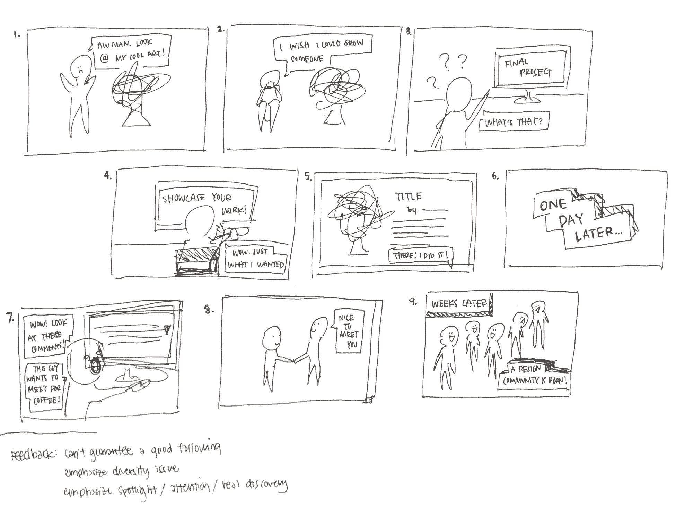
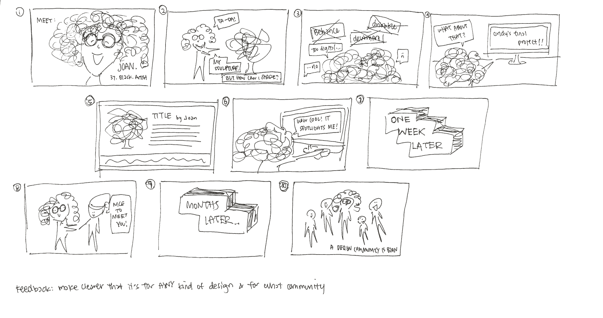

Storyboards
 These two storyboards were meant to convey a distraught artist who wants to showcase his/her work but can't seem to find the right medium and platform to. In both storyboards, the end result is a increased exposure and a supportive art and design community being born. I received feedback to keep emphasizing the diversity issue and how this project separates itself from the other existing art and design showcase sites. Storyboarding helped narrow down the features I want to include on the site and think about how someone might actually utilize a website or app like this to promote themselves. It also helped me realize the true goals and intentions of this site – to build exposure for lesser-known types of artists and designers and to build a supportive and more informed community.